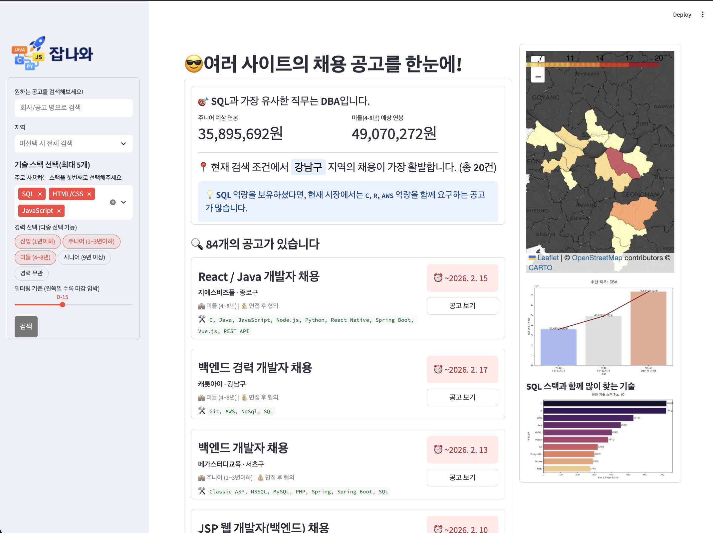
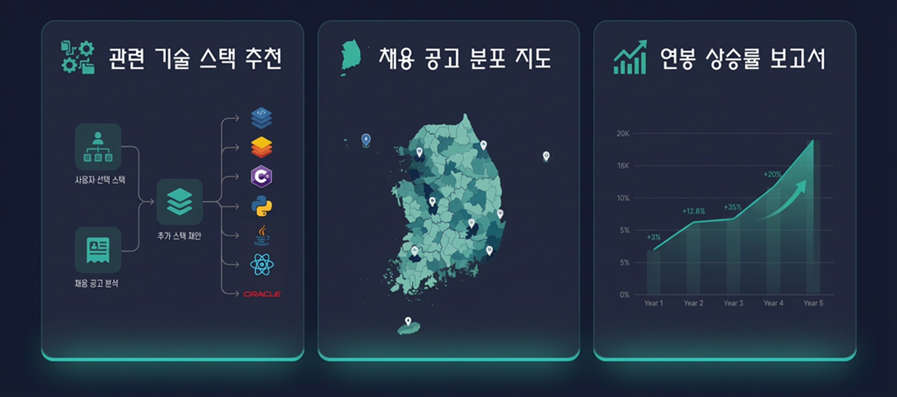

Overview
프로젝트 소개
JOBNAWA는 원티드, 랠릿, 점핏처럼 흩어져 있는 IT 채용 공고를 한곳에서 검색하고 비교하는 데이터 기반 큐레이션 서비스입니다. 사용자는 회사명, 공고명, 지역, 기술 스택, 경력, 마감 조건으로 공고를 필터링하고 현재 시장에서 함께 요구되는 기술 스택과 지역별 채용 밀도를 확인할 수 있습니다.
Project
원티드, 랠릿, 점핏 채용 공고를 통합해 기술 스택·지역·연봉 인사이트를 제공하는 Streamlit 팀 프로젝트

Overview
JOBNAWA는 원티드, 랠릿, 점핏처럼 흩어져 있는 IT 채용 공고를 한곳에서 검색하고 비교하는 데이터 기반 큐레이션 서비스입니다. 사용자는 회사명, 공고명, 지역, 기술 스택, 경력, 마감 조건으로 공고를 필터링하고 현재 시장에서 함께 요구되는 기술 스택과 지역별 채용 밀도를 확인할 수 있습니다.
Problem
개발자 채용 공고는 플랫폼마다 흩어져 있고, 같은 직무라도 요구 기술과 연봉 흐름을 한눈에 비교하기 어렵습니다. 다나와처럼 조건을 좁혀 비교하는 경험을 채용 공고에 적용하고, 수집된 데이터를 분석 자료로 바꾸는 것을 목표로 했습니다.
Flow
채용 사이트 URL 수집 → Selenium·BeautifulSoup 기반 공고 크롤링 → 주소·기술 스택·경력 데이터 정규화 → CSV 통합 데이터 생성 → Streamlit 필터 UI → 채용 카드, 워드클라우드, 지도, 연봉·스택 분석 시각화
Troubleshooting
채용 사이트마다 동적 로딩 방식과 렌더링 속도가 달라 크롤링 중 일부 데이터가 누락될 수 있었습니다.
페이지가 완전히 로딩되기 전에 HTML을 수집하거나, 스크롤 이후 나타나는 공고를 충분히 기다리지 못하는 문제가 있었습니다.
WebDriverWait와 스크롤 자동화 로직을 적용해 주요 요소가 로드된 뒤 데이터를 수집하도록 바꾸고, 이미지 로딩 차단과 브라우저 주기적 초기화로 크롤링 부담을 줄였습니다.
크롤링은 선택자만 맞추는 작업이 아니라 페이지 로딩 타이밍과 브라우저 리소스 관리까지 함께 다뤄야 안정적이었습니다.
사이트마다 주소 표기와 기술 스택 표기 방식이 달라 지도 시각화와 필터 결과가 흔들렸습니다.
같은 지역이나 기술도 서로 다른 문자열로 저장되면 필터링과 좌표 매핑에서 같은 값으로 묶이지 않았습니다.
정규표현식과 전처리 규칙으로 주소, 경력, 기술 스택 데이터를 표준화하고 통합 CSV를 기준으로 분석 화면을 구성했습니다.
데이터 서비스의 품질은 화려한 차트보다 먼저 원천 데이터의 표준화와 일관성에서 결정된다는 점을 체감했습니다.
Screens

Learning
크롤러, 데이터 정제, 분석 모듈, Streamlit UI를 함께 연결하면서 수집한 데이터를 사용자가 탐색할 수 있는 대시보드 경험으로 바꾸는 흐름을 익혔습니다.